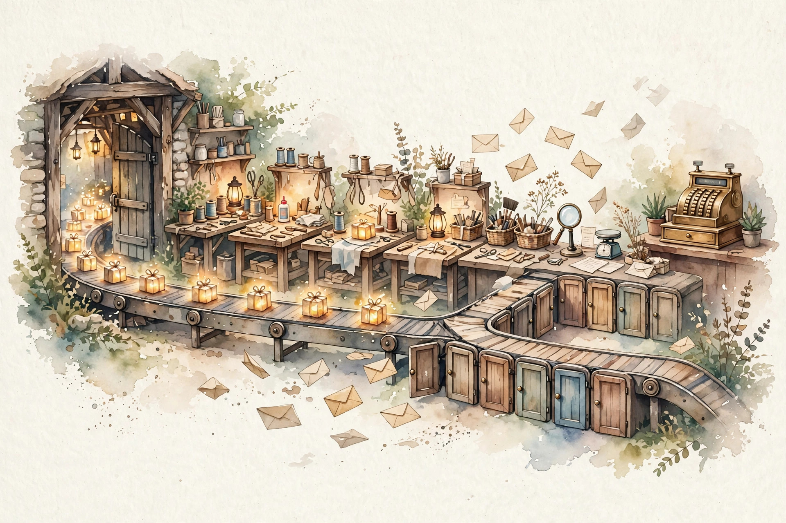
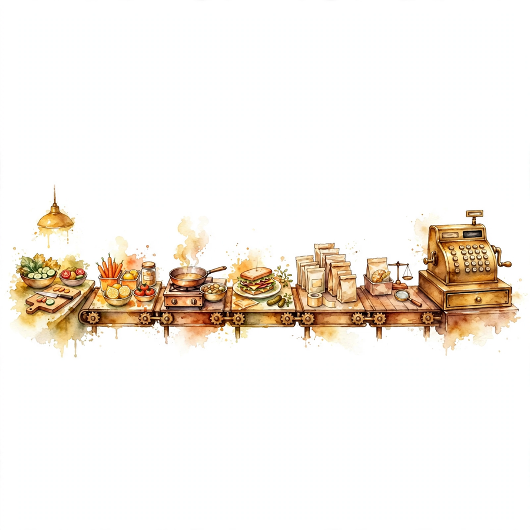
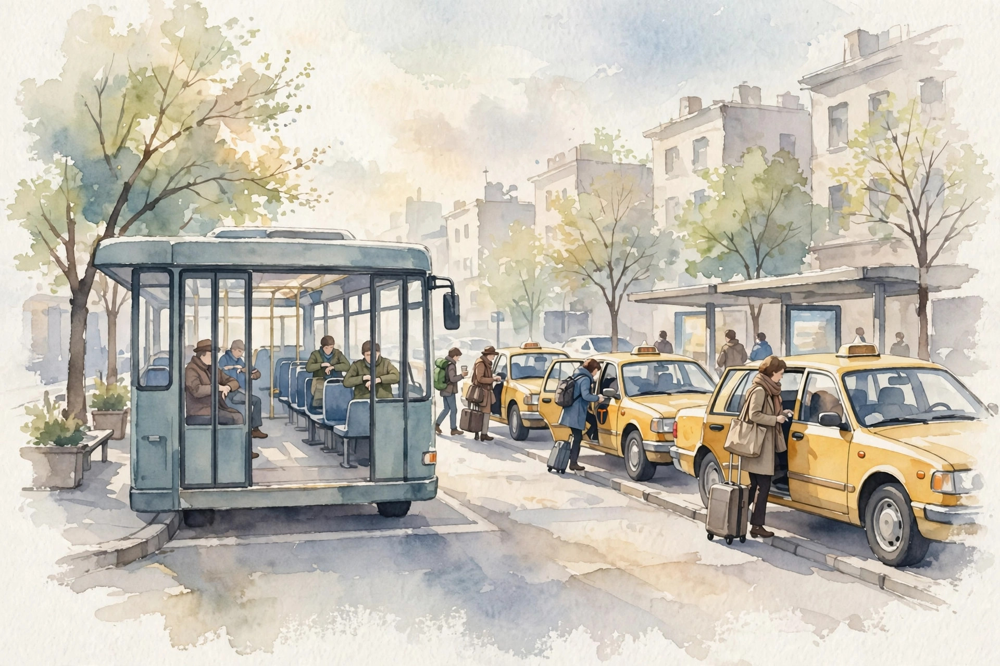

Unit 08 companion · narrated from the lesson document
Twelve concepts, one arc: how a server boards requests without idling, guards its memory and its tail, routes each token to two experts out of eight, and turns the whole machine into dollars per million tokens.
From the lesson The idea, and every number beside it, comes from the cited section of lesson-08-serving-moe.md. The phrasing is the companion’s.
Illustration Invented by the companion: an analogy, a toy with made-up values, or a what-if. Never lecture content.
companion Companion voice: the idea above the tag is from the lesson. The generalization below it is the companion’s.
Provenance: no lecture transcript exists for this session. Calendar anchors: Week 7, Nov 04 (LLM Serving Efficiency), Nov 08 (Sparse Mixture-of-Experts), and the Nov 11 guest lecture by Dylan Patel (SemiAnalysis) on cluster economics. This page narrates the lesson document, not a video. Claim class for every lesson leaf: PLANNED / SOURCE ATTRIBUTION PENDING. Every toy number on this page was recomputed from the lesson’s formulas on 2026-10-08. No internal inconsistency surfaced in this unit’s toys.
companion Chapter plate, companion voice: Board on arrival. Guard the tail. Bill the denominator.


From the lessonC01 §2, §3
Static batching runs like a bus on a timetable, where early riders wait out the departure. Continuous batching runs like a taxi stand: each arrival claims the next open seat, and the batch reforms every iteration. The GPU never sits idle awaiting company.
From the lessonC01 §4, §6
The toy sends 4 requests at t = 0, 1, 2, 3, each needing 10 decode tokens at 0.1 s per token, 1.0 s of work. Under continuous batching each starts on arrival and completes at 1, 2, 3, 4: mean completion 2.5 s, mean latency 1.0 s. Under static pairs, request 1 waits on request 2 and both complete at 2.0, while requests 3 and 4 complete at 4.0: mean completion 3.0 s, mean latency 1.5 s. The 0.5 s win is all wait removed, not speed.
From the lessonC01 §7, §9
Insertion bills. A huge prefill barging into running decodes stalls every one of them for its full duration. Chunk it or queue it (C03).

Illustration Stand lab. Enter arrival times and seconds per request. The widget compares continuous against static pairs.
Arrivals:
Seconds each:
From the lessonC02 §2, §3
The waiting room demands a door policy. Admission control selects who enters the running set, leaving the rest to wait. Backpressure signals upstream to ease off: the room is full. Without that signal the queue swells until memory dies.
From the lessonC02 §4, §6
The toy fires 10 requests at once at a server running 4 at a time, each costing 1.0 s. Positions 0 to 3 start immediately, 4 to 7 wait one round, and 8 and 9 wait two. Peak queue depth 6, max wait 2.0 s, mean wait 0.8 s. Cap the queue at 4 and requests 9 and 10 get rejected at once, failing fast instead of waiting 2 s.
From the lessonC02 §7, §9
The deadly case is a queue that never drains. Arrivals permanently outpace service, waits climb without bound, and the server reports healthy while users time out. A p99 rising linearly for an hour is the signature.
From the lessonC03 §2, §3
Prefill arrives as one big parallel gulp: compute-bound and fast per token. Decode arrives as sips: memory-bound and slow per token. A naive scheduler swallows the whole gulp at once while every decoding request waits with held breath. Chunked prefill sips the gulp instead: split the prompt and interleave the pieces.
From the lessonC03 §4, §6
The toy prefills a 512-token prompt at 2000 tok/s in 0.256 s, while one decode token at 50 tok/s takes 0.02 s. A whole prefill barging in stalls decodes for 0.256 s, roughly 13 decode tokens of stall. Split 2 by 256 and each chunk costs 0.128 s interleaved with decodes, halving the worst stall.
From the lessonC03 §7, §9
Chunks carry an order: chunk 2 needs chunk 1’s KV. A scheduler bug that runs chunk 2 first feeds attention garbage. Decodes stalling 0.25 s on every new arrival signal missing chunking.
From the lessonC04 §2, §3
The KV cache works like a parking lot with numbered spaces. Each request parks its KV, and LRU tows whichever car sat idle longest. Prefix caching pools the lot: requests sharing a prompt prefix split one parked KV.
From the lessonC04 §4, §6
The toy sets L = 32 layers, width 4096, fp16. Bytes per token = 2 × 32 × 4096 × 2 = 524,288, or 0.5 MiB, so a 1000-token request parks 500 MiB. The lot holds 4 cars. Accesses run A, B, C, D, A, E: four misses fill the lot, A hits, then E misses and tows B, idle since step 2. One hit in six accesses. A shared 200-token prefix parks its 100 MiB a single time instead of twice.
From the lessonC04 §7, §9
The lot can thrash. Five hot requests in four spaces means every access tows the next car needed: hit rate zero, recompute forever. Eviction is never cheap under thrash.
From the lessonC05 §2, §3
Throughput counts the turnstile, and tail latency measures the longest wait in line. Averages conceal the tail. Teams write SLOs on tails, never on means.
From the lessonC05 §4, §6
The toy runs 100 requests: 90 finish in 1.0 s, 10 in 3.0 s. Mean 1.2 s, p50 1.0 s, p99 3.0 s. At 50 req/s, Little’s law sets concurrency = 50 × 1.2 = 60 in flight. Kill the tail so everything finishes in 1.0 s and concurrency falls to 50, letting the same hardware serve 60 req/s at equal concurrency.
From the lessonC05 §7, §9
Tails have causes: long prefills, cache misses. Attribute every slow request and one cause usually dominates. A burst breaks steady-state math: the queue builds while the old mean undercounts the pain.
Illustration Tail lab. Enter fast count, fast seconds, slow count, slow seconds, and req/s. The widget returns mean, p50, p99, and concurrency.
Fast count:
Fast seconds:
Slow count:
Slow seconds:
Req per s:
From the lessonC06 §2, §3
The gate plays receptionist. It scores all eight experts for the token, selects the top 2, and divides the token’s weight between them by softmax. The output blends the two chosen experts by weight.
From the lessonC06 §4, §6
The toy feeds gate logits [2.1, 0.3, 1.5, −0.2, 0.8, 1.1, −1.0, 0.1]. Softmax yields [0.379, 0.063, 0.208, 0.038, 0.103, 0.140, 0.017, 0.051]. Top-2 lands on experts 0 and 2, renormalized to 0.646 and 0.354, so output = 0.646 E_0(x) + 0.354 E_2(x). The remaining six experts see nothing for this token. That absence is the sparsity.
From the lessonC06 §7, §9
The receptionist can favor forever: gate collapse. One expert wins early, captures all the gradient, and the other seven starve. Gating costs one small matmul, and the real cost is load balance (C08).
Illustration Receptionist lab. Enter 8 gate logits. The widget routes top-2 and renormalizes.
Logits:
From the lessonC07 §2, §3
Each expert works like a checkout lane of fixed length, and capacity is that length. Tokens beyond capacity get dropped: their expert output is skipped while the token continues down the residual path. The capacity factor adds slack for overflow.
From the lessonC07 §4, §6
The toy routes 64 tokens across 8 experts at top-2 with factor 1.25. Balanced share: 64 × 2 / 8 = 16 per expert, so capacity = 16 × 1.25 = 20. Expert 0 receives 40: 20 run and 20 drop, a 50% drop rate at that lane. Globally 20 of 128 routed slots drop, 15.6%. Factor 2.0 raises capacity to 32 with 8 drops, but the extra slack costs buffer memory.
From the lessonC07 §7, §9
Drops are never neutral. At factor 1.0 with a spiky gate, the popular expert sheds 30% every step and trains on a biased subset. Eval holds flat until drops pass about 5%, then falls at the knee.
From the lessonC08 §2, §3
Imbalance looks like a jammed checkout with seven empty ones beside it. Step time follows the fullest expert. The balance loss plays traffic cop, taxing the gate for uneven assignments.
From the lessonC08 §4, §6
The toy counts [40, 10, 5, 3, 2, 2, 1, 1]: total 64, mean 8, max 40, so imbalance = 40 / 8 = 5.0. The step pays for 40 tokens of work at expert 0 while seven experts idle, 5x the balanced cost. At capacity 20, expert 0 additionally drops half its tokens, so skew wastes time and tokens together.
From the lessonC08 §7, §9
The cop can overcorrect. Excess balance weight routes uniformly and experts never specialize, while too little invites collapse back. Sweep the weight and plot imbalance against task score: a U-shape with a sweet spot.
Illustration Skew lab. Enter 8 expert counts. The widget returns mean, max, and the imbalance ratio.
Counts:
From the lessonC09 §2, §3
Dispatch runs the mailroom. Each token gets copied to its 2 experts’ GPUs, and each expert’s output returns by mail. The envelopes are the activations: tokens × k × d floats, sent twice, there and back.
From the lessonC09 §4, §6
The toy moves 64 tokens at top-2 with d = 4096 in fp16. One way costs 64 × 2 × 4096 × 2 = 1,048,576 bytes, 1 MiB. The round trip costs 2 MiB per layer per step. Across thirty-two MoE layers that is 64 MiB per step of pure dispatch: the all-to-all tax on MoE.
From the lessonC09 §7, §9
A slow interconnect lets the tax dominate: dispatch outruns compute and the MoE ends up slower than the dense model it displaced. Co-locate experts when the model fits, and shard only when it does not.
From the lessonC10 §2, §3
All-reduce gathers a group huddle where everyone ends holding the same sum, at ring cost 2(n−1)/n × bytes. All-to-all runs a mail swap where everyone posts a different piece to everyone else. Different patterns charge different bills.
From the lessonC10 §4, §6
The toy wires 8 GPUs with a 1 MiB payload. All-reduce costs 2 × 7/8 × 1 = 1.75 MiB per GPU. All-to-all costs about 1 MiB each way per GPU. The MoE layer pays all-to-all twice, dispatch plus combine, for 2 MiB per GPU round trip. Data parallel spends one all-reduce per sync.
From the lessonC10 §7, §9
The formulas assume calm links. Incast means all 8 GPUs blasting one peer at once, which collapses the pattern and pushes measured cost to multiples of the formula. Measure instead of assuming.
From the lessonC11 §2, §3
Decode runs memory-bound: each step scans the whole model once, then performs B tokens of work. Larger B spreads the read cost over more tokens, but per-token compute keeps growing. The curve bends toward an asymptote it never reaches.
From the lessonC11 §4, §6
The toy sets seconds per step t(B) = 0.005 + 0.002 B. B = 1 yields 142.9 tok/s. B = 4 yields 307.7 tok/s, a 2.15x gain. B = 8 yields 381.0 tok/s, 1.24x. B = 16 yields 432.4 tok/s, 1.13x. The asymptote sits at 1/0.002 = 500 tok/s, and gains shrink with every doubling.
From the lessonC11 §7, §9
Memory binds before the asymptote: 64 KV caches may not fit at all. Batch for throughput, and shard for latency.
From the lessonC12 §2, §3
Dollars per token equals dollars per second over tokens per second. Each systems win in this unit, continuous batching, chunking, MoE sparsity, lands in the denominator.
From the lessonC12 §4, §6
The toy prices a GPU at $3/hour, a labeled hypothetical, serving 500 tok/s. Cost = 1e6 / 500 × 3 / 3600 = $1.67 per million tokens, falling to $0.83 at doubled throughput. A 640-token request, 512 prefill plus 128 decode, costs $0.00107 at the base rate. The price is a toy, but the arithmetic carries the lesson.
From the lessonC12 §7, §9
The toy assumes full utilization. Real utilization at 40% multiplies the true cost by 2.5x. When the bill beats the model, suspect utilization first.
Illustration Bill lab. Enter throughput, dollars per hour, and utilization. The widget prices a million tokens.
Tokens per s:
$ per hour:
Utilization:
companion The arc, end to end. Requests board on arrival like a taxi line (C01), and the waiting room runs a door policy (C02). Prefill gulps get sipped so decodes never hold their breath (C03). KV parks in a lot with LRU towing (C04). The turnstile counts throughput while the tail writes the SLOs (C05). The receptionist routes each token to two of eight experts (C06), each lane has a fixed length (C07), and the gate’s favorites jam one lane (C08). Tokens are mailed to expert GPUs and back (C09), huddle and mail swap bill differently (C10). Batches bend toward an asymptote (C11). And the whole machine divides into dollars per million tokens (C12).
companion The chapter plate in the companion’s own words: Board on arrival. Guard the tail. Bill the denominator. The serving engineer owns the scheduler and the cache policy. The MoE engineer owns the gate, the capacity, and the dispatch tax. The economist owns the tail attribution and the utilization number. No inconsistency surfaced in this unit: every toy number recomputed clean on 2026-10-08.
Every lesson on this page, in order. Tap one to return to its chapter.